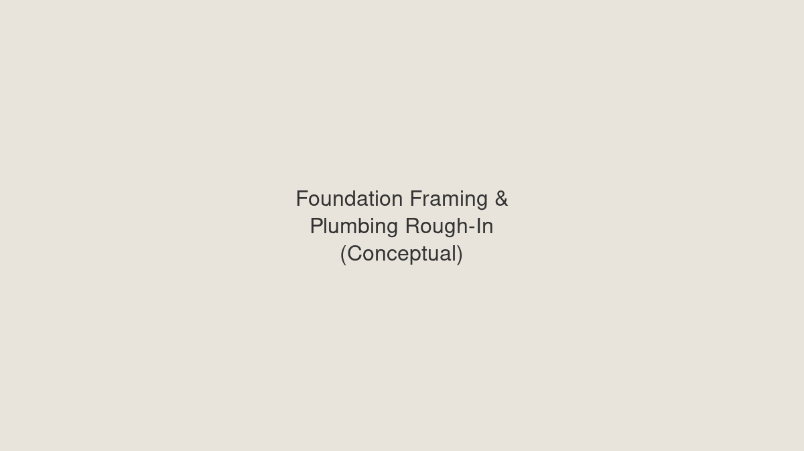

Foundation Materials
Print this page (Ctrl+P / Cmd+P) for a clean PDF.
From general note 1 and sheet A101. Foundation walls are CMU block surrounding a crawl space. The house box on that foundation is 32'-0" × 34'-0" (1,088 sqft). Perimeter is 2×(32+34) = 132 lf. There is no slab-on-grade under the house. The 10'-0" × 32'-0" porches are framed decks on 6×6 posts, not on the CMU.
The crawl-space walls are the bearing lines. Floor joists run north–south, the same direction as the rafters, and bear on the north and south CMU walls. That is 27 joists at 32'-0" on the 1st floor and 27 at 32'-0" on the 2nd floor (16" OC along the 34'-0" walls). The buy list is on the Rough-In page.
CMU Crawl-Space Walls
| Item | Qty from plans | Unit Price | Est. Total |
|---|---|---|---|
| 8×8×16 CMU — 132 lf perimeter × 4'-0" wall height (about 6 courses). 10% waste included. | 660 blocks | $2.40 | $1,584 |
| Mortar (Type S) | 40 bags | $8.00 | $320 |
| #4 rebar, grout, and bond beam at the top of the CMU | 132 lf | — | $450 |
| Anchor bolts and washers for the PT sill (about 4'-0" OC) | 36 ea | — | $80 |
| Crawl-space access door 3'-8" × 3'-4" (schedule 3834) — framed in the CMU | 1 | $250 | $250 |
| CMU Subtotal | $2,684 | ||
Concrete — Footings Only
| Item | Qty from plans | Unit Price | Est. Total |
|---|---|---|---|
| Continuous footing under the CMU, 16" wide × 8" thick × 132 lf (4.3 yd³ + waste) | 5 yd³ | $145 | $725 |
| Porch post pads — 7 ground posts on the 32' porch line (upper posts stack on these) | 1 yd³ | $145 | $145 |
| Concrete stoop on grade at the main level (note 4 — final size set to grade) | 0.5 yd³ | $145 | $73 |
| Crushed stone in the footing trench | 5 yd³ | $45 | $225 |
| Stoop form boards only. House footings are trench-poured. Floor stringers are not forms. | 40 lf | $2.00 | $80 |
| Concrete Subtotal | $1,248 | ||
Plumbing in the Crawl Space
| Item | Qty from plans | Unit Price | Est. Total |
|---|---|---|---|
| PVC drain/waste/vent (3" & 4" mains, 2" branches) hung in the crawl — two kitchens, two baths, two laundries | 180 ft | $3.20 | $576 |
| Fittings, cleanouts, traps, and hangers | lot | — | $320 |
| Water supply stubs (PEX or copper) to both floors | 120 ft | $1.80 | $216 |
| Sleeves and sealant at CMU penetrations | lot | — | $150 |
| Plumbing Subtotal | $1,262 | ||
Foundation Materials Grand Total (approx.): $5,194
Concrete is the footing under the CMU, the porch post pads, and the stoop. There is no house slab. Ledgestone over the CMU is on the Trim-Out page. Ready-mix in the Ellijay / Blue Ridge area is about $145/yd³ delivered.
Rendering
CMU crawl-space walls under the 32'-0" × 34'-0" house. The 27 joists at 32'-0" on each floor bear on the north and south walls.

Conceptual view only. The built foundation is a CMU crawl-space wall, not a formed slab with wood stringers.